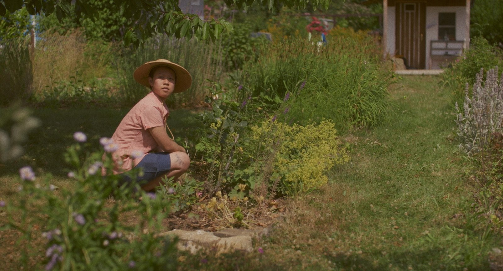
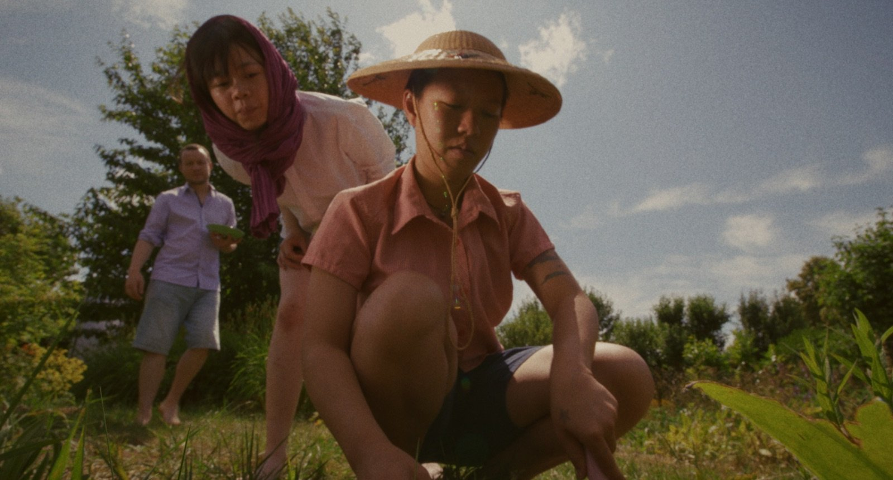
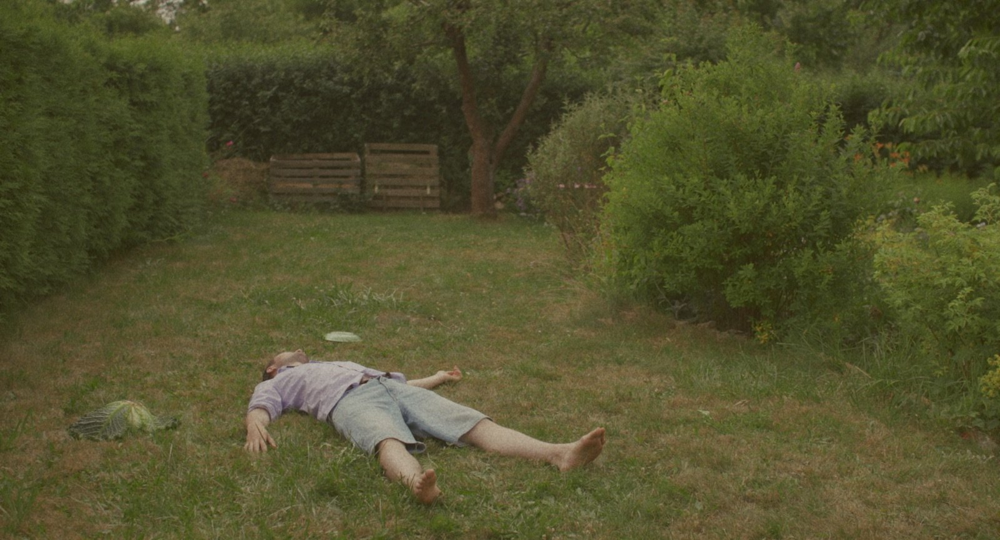
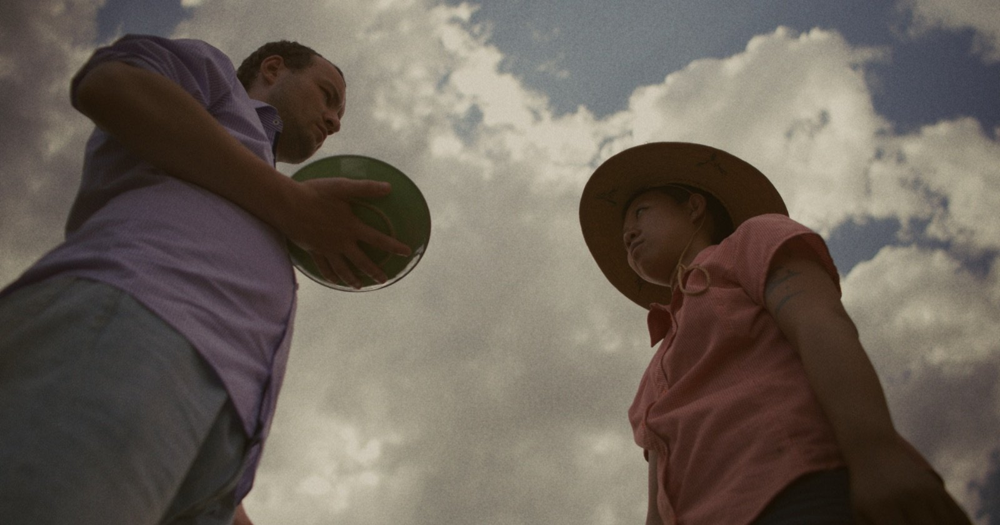
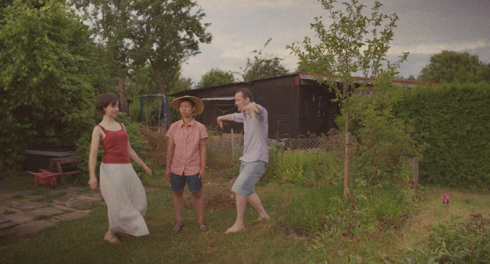

Back
What A Violent Cabbage
Short film, 2025
6m40s, colour, stereo, 1.85:1
Director, writer, editor, dialogue editor
Synopsis
Julian, a newcomer at the allotment garden, mistakes Ploy, the neighbour, for a cleaning lady. Things take a strange turn when someone comes asking for a bratwurst.
Credits
Cast: Julian Mosbach, Krittaporn Mahaweerarat, Sara Meritxell Riveriro Cores
Written, directed and edited by Jodie Luk
Director of Photography: Julia Schöffel
First Assistant Camera: Felipe Cuartas
Production Designer: Gift Lalicha Lalitsasivimol
Location Sound Mixer: Béla Zielinski
Boom Operators: Difei Song, Gift Lalicha Lalitsasivimol
Sound Mixer & Music: Konstantin Glas Montecino
Foley Artist: Rocco Cheng
Dialogue Editor: Jodie Luk
Written, directed and edited by Jodie Luk
Director of Photography: Julia Schöffel
First Assistant Camera: Felipe Cuartas
Production Designer: Gift Lalicha Lalitsasivimol
Location Sound Mixer: Béla Zielinski
Boom Operators: Difei Song, Gift Lalicha Lalitsasivimol
Sound Mixer & Music: Konstantin Glas Montecino
Foley Artist: Rocco Cheng
Dialogue Editor: Jodie Luk
Poster & Title Design: Jennifer Yue
Special Thanks: Jakob Hüfner, Nele Seifert, Grüne Aue e.V., Bauhaus Universität Weimar
Special Thanks: Jakob Hüfner, Nele Seifert, Grüne Aue e.V., Bauhaus Universität Weimar




